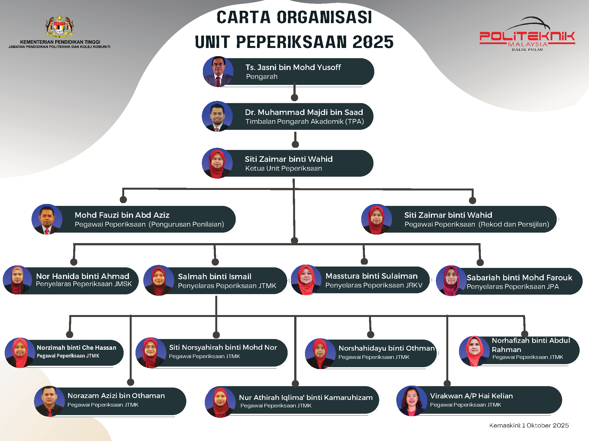

Tentang Unit
Unit Peperiksaan berperanan untuk menyelaras, menyelia, memantau, membantu dan memudahkan pengurusan penilaian dan peperiksaan di jabatan-jabatan.
Unit ini juga bertanggungjawab terhadap penyelarasan hal berkaitan peperiksaan akhir semester, keputusan peperiksaan dan persijilan.
Unit Peperiksaan PBU dikendalikan oleh dua (2) orang Pegawai Peperiksaan dengan dibantu oleh Penyelaras Peperiksaan Jabatan (PPJ) yang telah dilantik.
Setiap jabatan mempunyai ahli jawatankuasa dalam menguruskan kerja-kerja pengurusan bank soalan, kemaskini data pelajar dan urusan lain berkaitan peperiksaan.
Pegawai Peperiksaan bertanggungjawab mengawasi secara keseluruhan perjalanan peperiksaan politeknik manakala PPJ adalah bertanggungjawab menguruskan hal-hal peperiksaan bagi jabatan masing-masing.
Tarikh kemaskini: 13 Januari 2025
Fungsi Utama
- Merancang program aktiviti peperiksaan dan penilaian
- Melaksanakan proses penggubalan item di peringkat politeknik
- Melaksanakan proses penilaian dan pemurnian item sebagai Politeknik Penyelaras
- Menyediakan jadual peperiksaan dan pengawasan peperiksaan akhir
- Menyediakan set soalan, buku jawapan dan peralatan yang berkaitan sebelum peperiksaan
- Menyediakan dewan dan bilik peperiksaan
- Mengeluarkan arahan, peraturan dan pekeliling peperiksaan
- Memastikan keselamatan item peperiksaan
- Menyediakan lembaran markah dan dokumen berkaitan sebelum mesyuarat JK Peperiksaan Politeknik
- Menyediakan laporan dan dokumen berkaitan untuk dibentangkan dalam mesyuarat Lembaga Peperiksaan
- Menyediakan sijil dan transkrip untuk lulusan
Carta Organisasi Unit
